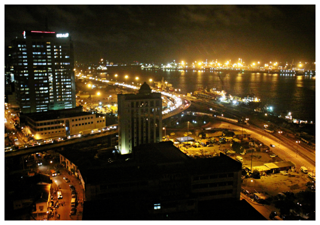
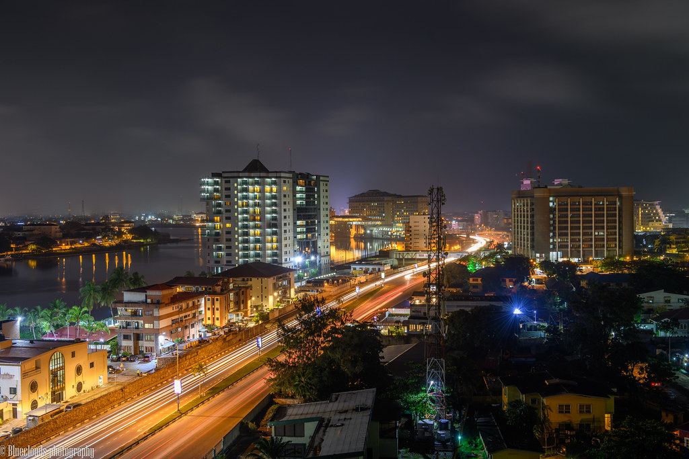

Popular Saying
“Eko o ni baje!” – Lagos no dey carry last
Iconic Lagos
 Fun Fact
Lagos was once the capital of Nigeria and remains its economic powerhouse with over 20 million residents.
By Chukwuifeka Nonso John | Student No: 9039950
“Eko o ni baje!” – Lagos no dey carry last
Lagos was once the capital of Nigeria and remains its economic powerhouse with over 20 million residents.